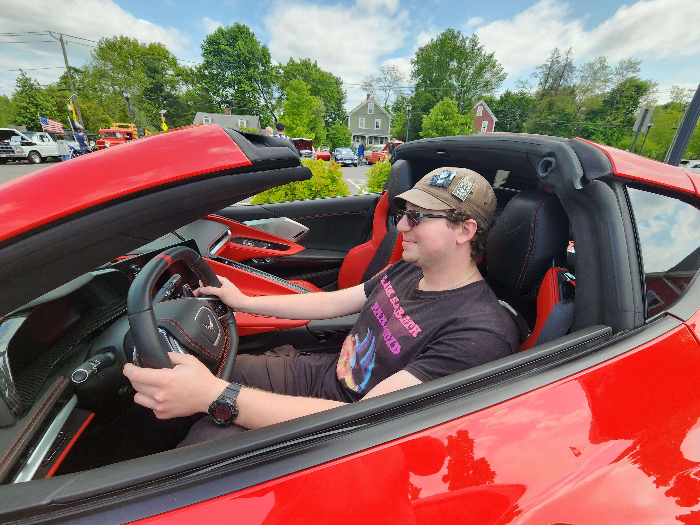

Who am I?
Hello there!
General Kenobi
I’m Ed, a driven Computer Science Masters Student at UMass Amherst with a focus in data science, machine learning, and theory.
My journey into the world of computer science began during my first semester as an undergraduate, driven by a deep interest in mathematics. Although uncertain about my future path, I was certain that mathematics would play a significant role in it. The idea of creating something that could be utilized by others also intrigued me.
I was introduced to computer science through an introductory course, and I was captivated by the power of assigning instructions to a computer and witnessing their execution. My very first program involved estimating Euler’s number. This experience ignited my passion for Data Science and Machine Learning. I became fascinated with the ability to leverage data to make predictions and informed decisions. Additionally, I developed an interest in the theoretical aspects of computer science and its application to problem-solving in various fields.

I hope this glimpse into my background and interests has given you a better understanding of who I am and what drives me in the field of computer science. If you have any questions or would like to connect, don’t hesitate to reach out. I look forward to hearing from you!